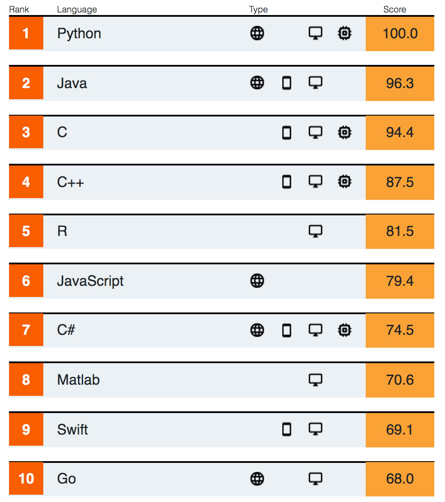
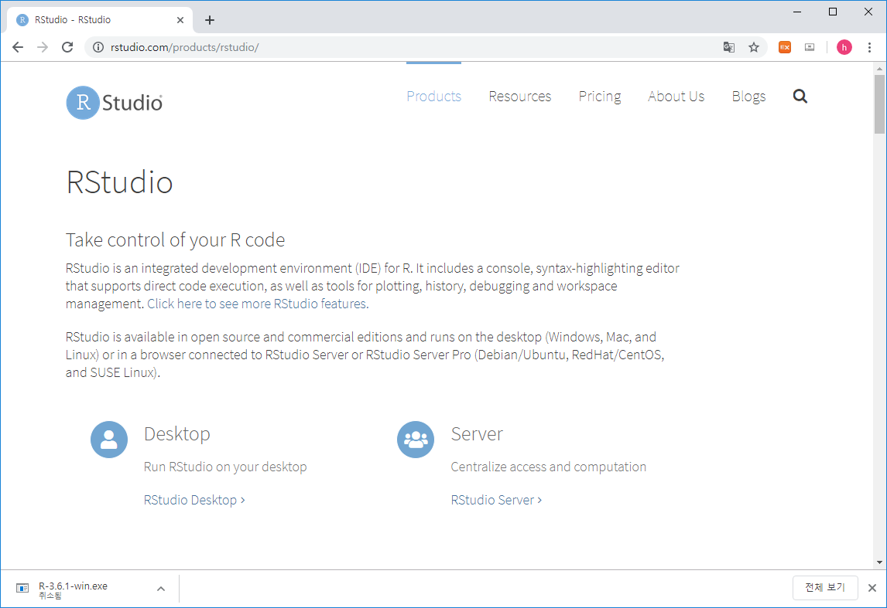

Chapter 2 R basics
2.1 What is R / Rstudio

R은 통계나 생물통계, 유전학을 연구하는 사람들 사이에서 널리 사용되는 오픈소스 프로그래밍 언어 입니다. Bell Lab에서 개발한 S 언어에서 유래했으며 엄청나게 많은 라이브러리 (다른 사람들이 만들어 놓은 코드)가 있어서 쉽게 가져다 사용할 수 있습니다. R은 복잡한 수식이나 통계 알고리즘을 간단히 구현하고 사용할 수 있으며 C, C++, Python 등 다른 언어들과의 병행 사용도 가능합니다. 2019년 top five language에 랭크 되었으며 이는 빅데이터 증가에 따라 인기가 높아진 것으로 볼 수 있습니다 (참고로 2018년에는 7위).

Despite being a much more specialized language than the others, it’s maintained its popularity in recent years due to the world being awash in an ever-growing pile of big data. https://spectrum.ieee.org/computing/software/the-top-programming-languages-2019
R은 데이터를 통계분석에 널리 사용되는데 이는 데이터를 눈으로 확인하기 위한 visualization 이나 벡터 연산 등의 강력한 기능 때문에 점점 더 많은 사람들이 사용하고 있습니다. 기존에는 속도나 확장성이 다른 언어들에 비해 단점으로 지적되었으나 R 언어의 계속적인 개발과 업데이트로 이러한 단점들이 빠르게 보완되고 있습니다. R 사용을 위해서는 R 언어의 코어 프로그램을 먼저 설치하고 그 다음 R 언어용 IDE인 RStudio 설치가 필요합니다.


2.2 R / Rstudio installation
R 사이트에 접속 후 (https://www.r-project.org/) 좌측 메뉴 상단에 위치한 CRAN 클릭.

미러 사이트 목록에서 Korea의 아무 사이트나 들어감

Download R for Windows를 클릭 후 base 링크 들어가서


Download R 3.6.3 for Windows 링크로 실행 프로그램 다운로드 (2020.3 현재 R 버전은 3.6.3). 로컬 컴퓨터에 Download 된 R-3.6.3-win.exe 를 실행하고 설치 프로그램의 지시에 따라 R 언어 소프트웨어 설치를 완료합니다.

Rstudio는 R 언어를 위한 오픈소스 기반 통합개발환경(IDE)으로 R 프로그래밍을 위한 편리한 기능들을 제공해 줍니다. 다음 사이트에 접속 (https://www.rstudio.com/), 상단의 Products > RStudio 클릭

RStudio Desktop 선택 
Download RStudio Desktop 클릭

RStudio Desktop Free 버전의 Download를 선택하고

Download RStudio for Windows (2020.03현재 version 1.2.5033) 클릭, 다운로드. 로컬 컴퓨터에 다운로드된 RStudio-1.2.5033.exe를 실행하고 설치 가이드에 따라 설치 완료합니다.

2.3 Rstudio interface
- 아래 그림의 좌측 상단의 공간은 코드편집창, 좌측 하단은 콘솔창 입니다.

2.4 Keyboard shortcuts
- 참고사이트
- https://support.rstudio.com/hc/en-us/articles/200711853-Keyboard-Shortcuts
- Tools –> Keyboard shortcut Quick Reference (
Alt + Shift + K)
- 코드편집창 이동 (
Ctrl+1) 콘솔창 이동(Ctrl+2) - 한 줄 실행 (
Ctrl+Enter) - 주석처리 (
Ctrl + Shift + C)- 또는
#으로 시작하는 라인
- 또는
- 실습
- 코드편집창에서 다음 입력

- 단축키
Ctrl + enter로 코드 실행 - 단축키
Ctrl + 2로 커서 콘솔창으로 이동 x값x+y값 확인- 단축키
Ctrl + 1로 코드편집창 이동 - 단축키
Ctrl + Shift + C사용
2.5 Set working directory
시작 전 항상 작업 디렉토리 설정. 예를 들어 c: 아래 새로운 디렉토리 rprog2020 을 만들고 작업공간으로 설정
또는 아래와 같이 RStudio 메뉴 에서 설정

2.7 Help
R의 장점 중 하나로 방대한 양의 도움말 페이지가 제공됩니다. ? 명령을 사용하면 되며 구글이나 웹에서도 도움을 얻을 수 있습니다.
2.8 RStudio workspace


2.9 R packages
R은 “package”라 불리우는 다양한 함수 라이브러리를 사용할 수 있습니다. 예를 들어 sum() 이나 sd()와 같은 함수는 stats이라는 패키지에서 구현된 함수 입니다. 이러한 패키지는 인터넷의 repository에서 구할 수 있으며 대표적으로 The Comprehensive R Archive Network (CRAN) http://cran.r-project.org/web/views/ 와 생물학자를 위한 Bioconductor specialised in genomics http://www.bioconductor.org/packages/release/BiocViews.html#___Software 가 있습니다. 이러한 패키지의 설치는 아래와 같이 RStudio를 이용하거나 콘솔창에서 install.packages() 함수를 이용할 수 있습니다.

- UsingR package installation

패키지를 설치하고 사용하기 위해서는 library() 함수를 사용해서 미리 loading 해 두어야 합니다. 한 번 로딩으로 작업 세션이 끝날때까지 관련된 함수를 사용할 수 있으나 R 세션이나 RStudio를 재시작 할 경우 다시 로딩해야 사용할 수 있습니다.
- R 설치 디렉토리
- R 패키지 설치 디렉토리

2.10 Data sets
대부분의 패키지는 함수와 함께 관련된 도움말, 예제, 그리고 데이터셋을 같이 제공해 줍니다. library() 함수를 사용할 때 자동으로 같이 로딩이 되며 data() 함수를 사용해서 사용자 작업공간에 복사본을 만들어서 사용할 수 있습니다.